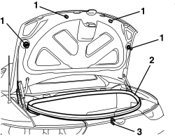
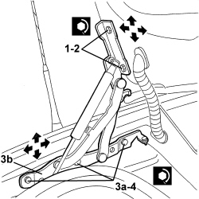

7025B10 BOOT LID - ALIGNMENT
- Path
- Procedures > 70 FITTINGS > 7025 COMPARTMENT COVERS > 7025B BOOT LID > 7025B10 BOOT LID - ALIGNMENT
- Kind
- repair procedure (removal / refitting; the operation number is the code)
- Applies to
- engines: 2.2 JTS, 3.2 JTS; all production periods
- Interactive page
- https://sloeber94.github.io/elrnDB-aBrrSpdr/en/#/946004063
Applies to: engines: 2.2 JTS, 3.2 JTS; all production periods
- Open the boot lid.
1. Check that the self-adjusting buffers are working properly. Replace them if necessary.
Op. 7025B12 BOOT LID BUFFERS/MOUNTINGS - R.R. AND ADJUST
2. Check that the boot lid housing seal along the entire perimeter is working properly.
3. If necessary, adjust the position of the lock striker.
Op. 7040B22 LUGGAGE COMPARTMENT/LOAD PLATFORM MOULDING - R+R
Op. 7025B58 BOOT LID LOCK STRIKER - R+R

Applies to: engines: 2.2 JTS, 3.2 JTS; all production periods
- If the adjustments indicated in the previous points are insufficient, adjust the position of the boot lid hinges as described below. Support the boot lid if necessary.
1. Working from both sides of the vehicle, loosen the boot lid bolts and adjust the boot lid position using the slotted holes in the hinges.
2. After adjustment, tighten the bolts to the specified torque.
Component | Fastening | dia | Value (daNm) | Validity |
|---|---|---|---|---|
BOOT LID | Bolt | - | 0.7 ÷ 0.8 |
- If necessary, adjust the lock striker position as described below.
- If the adjustment of the fastening between boot lid and hinges is insufficient, proceed as follows.
3. Working from both sides of the vehicle, loosen the bolts (3a) fixing the tailgate hinges (3b) to the body and adjust the hinge position using the slotted holes.
4. After adjustment, tighten the bolts to the specified torque.
Component | Fastening | dia | Value (daNm) | Validity |
|---|---|---|---|---|
BOOT LID HINGES | Bolt | - | 0.7 ÷ 0.8 |
- If necessary, adjust the lock striker position as described below.

Topics linked from this page (3)
- 7025B12 BOOT LID BUFFERS/MOUNTINGS - R.R. AND ADJUST
- 7025B58 BOOT LID LOCK STRIKER - R+R
- 7040B22 LUGGAGE COMPARTMENT/LOAD PLATFORM MOULDING - R+R